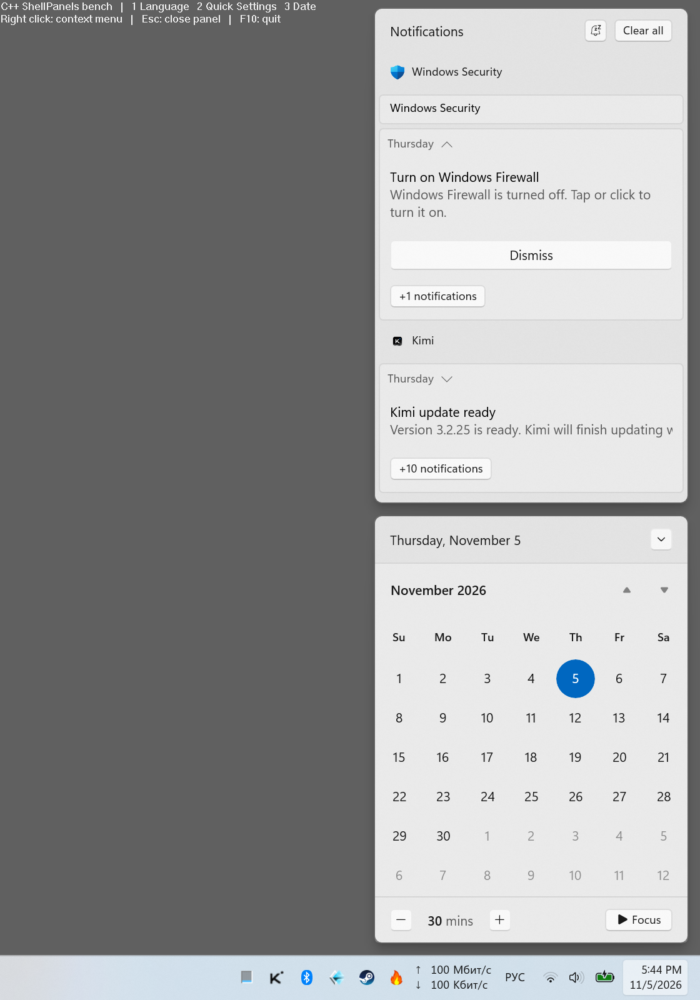
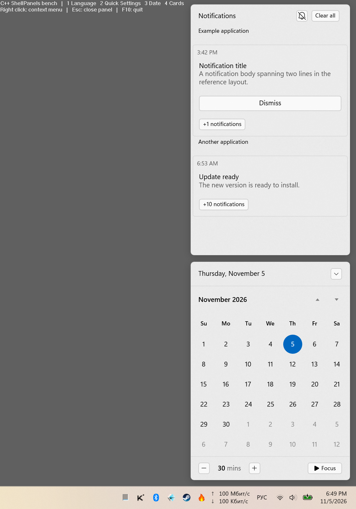

Windows 11 26100.9711, 2560×1600, 150%, монитор 240 Гц. Отдельная статическая библиотека C++/WinRT. Runtime приложения: 1 EXE + 1 patch DLL. Полное совпадение 1:1 пока не подтверждено.
Изменения и ограничения · Вход/выход · Сворачивание · Тесты · Открытые пункты · Предыдущая итерация
Windows — исходная запись
C++ — v15
Синхронизация по событиям приблизительная: FFmpeg и журнал ввода имеют смещение. Частота захвата VFR не равна частоте рендера. Числа движения получены по границам кадров. Меню батареи намеренно сохраняет общий отступ над taskbar.
Host::SetSections принимает Header / Body / Footer. Гибкая карточка занимает остаток высоты, фиксированная сворачивает только Body. Клавиша 4 в ShellBench открывает этот пример.

